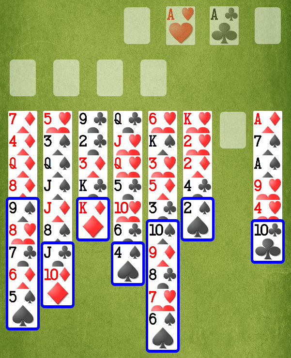
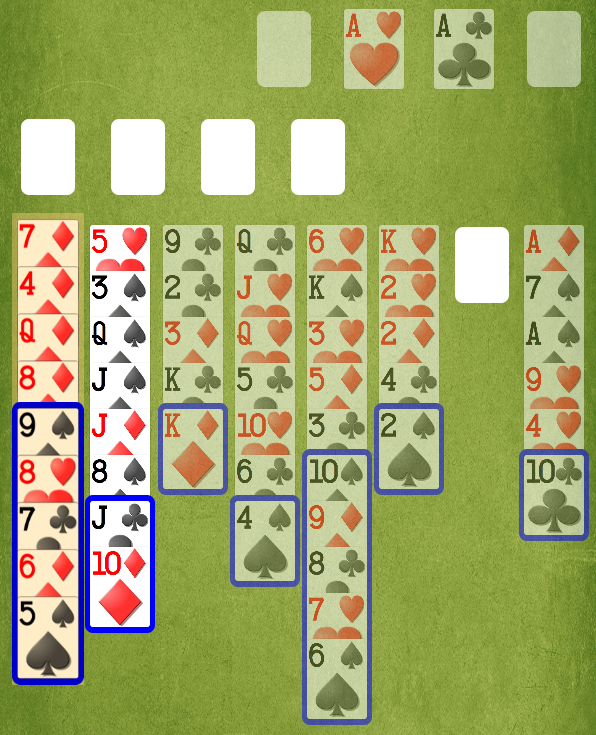
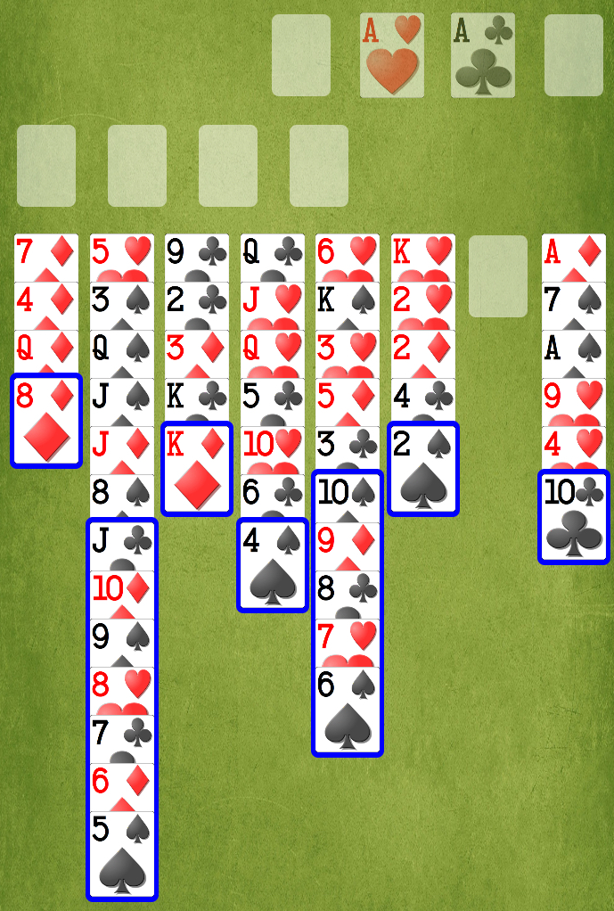

TapTapFreeCell is a FreeCell implementation where you tap, never drag, to indicate what you want to do.
To make a move, you tap twice. Tap-tap!
First tap a Freecell or Column to select it. TapTapFreeCell is now waiting for the second tap.
Then tap any legal place to move there.
Or tap elsewhere (such as the background) to cancel.
For example, here’s a layout during a game:

I want to move the sequence in Column 1 (black 9-8-7-6-5) onto the red 10 in Column 2. First, I tap Column 1:

Because of my settings, Column 1 grows a little and is tinted a little, to show it’s selected; and everything is dimmed except for destinations I can legally move to. Column 2 is a legal place to move from Column 1, so it is undimmed. (Alternatively, I could move the sequence to the empty Column 7, or I could move one card to a Freecell, so they are undimmed too.)
To move the sequence from Column 1 to Column 2, I tap Column 2. Tap-tap!
